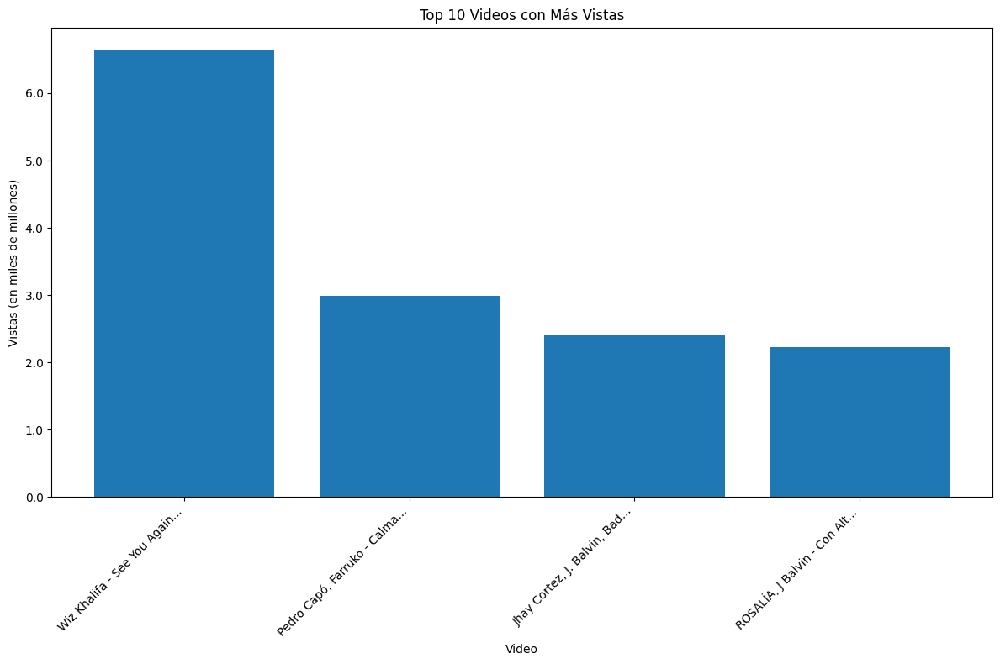
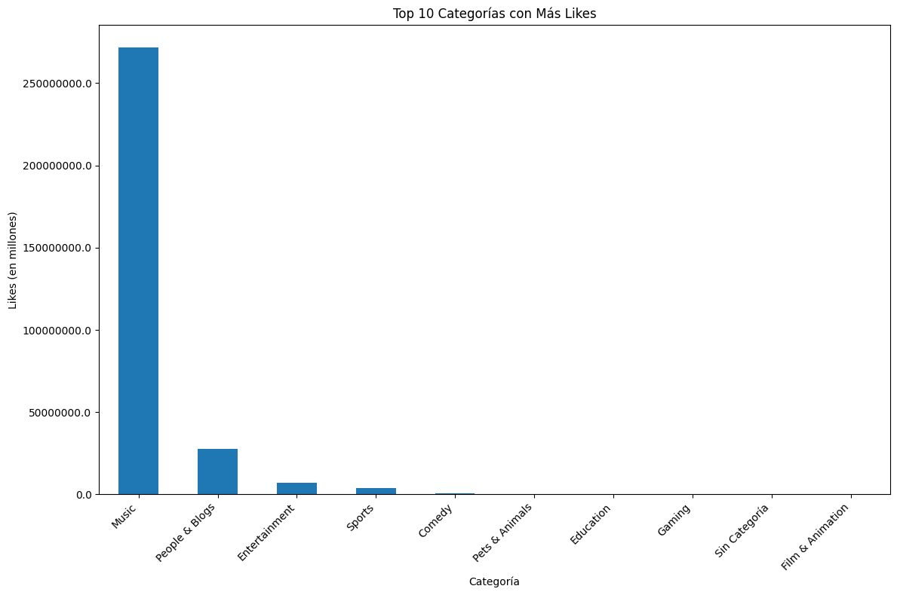
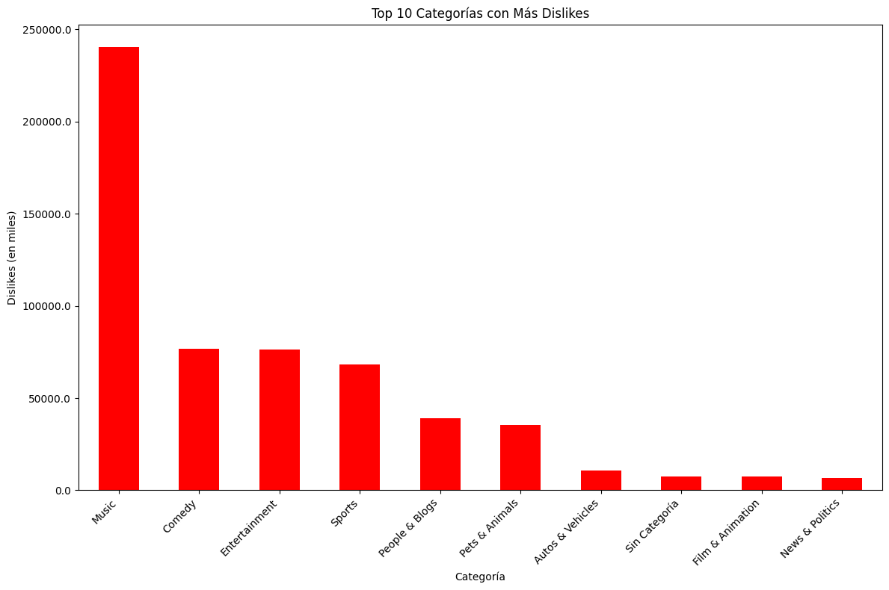
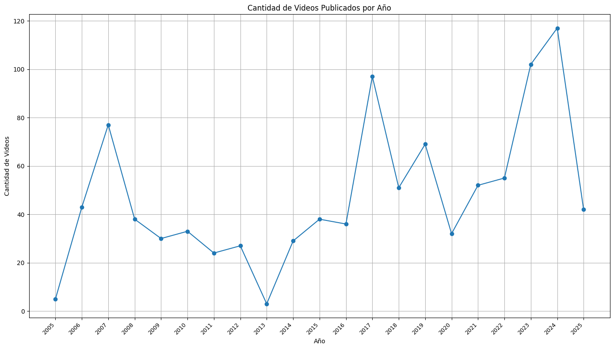
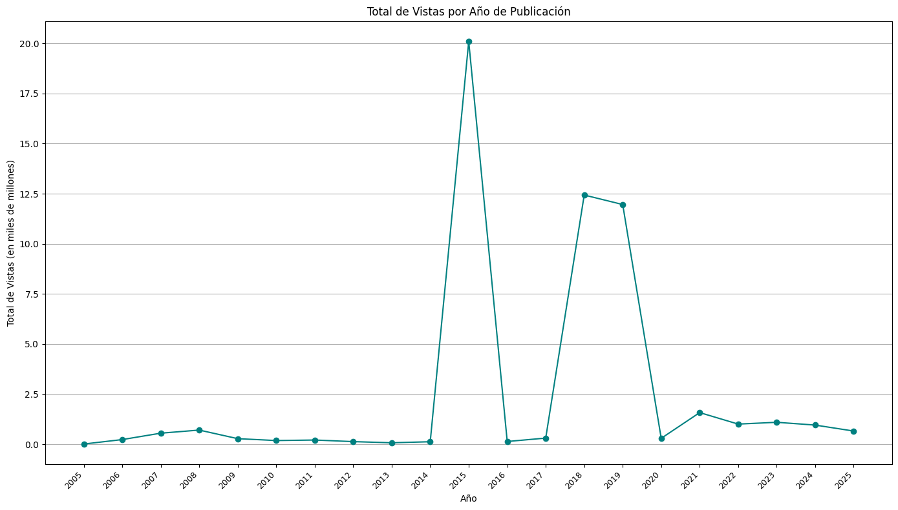

Descripción del Dataset
Este dataset contiene detalles de los 1000 videos más populares de YouTube hasta el 18 de abril de 2025.
Fuente: 1000 Most Trending YouTube Videos - Kaggle
Atributos:
- Rank: El ranking del video.
- Video: Nombre del video.
- Video views: Número de vistas del video.
- Likes: Número de likes del video.
- Dislikes: Número de dislikes del video.
- Category: Categoría del video.
- Published: Año de publicación del video.
Top 10 de Videos con más Vistas

Categorías con Más Likes

Categorías con Más Dislikes

Año vs Cantidad de Videos Publicados

Total de Vistas por Año
